The Cheetah render engine is a recursive raytracer which uses irradiance caching and photon maps to for computing global illumination. It was introduced with Cheetah3D 1.5 and is serving as Cheetah3Ds default renderer since more than a decade.
GeneralLet's start which some general properties of the Cheetah renderer which are used to set the output resolution of the image/movie and the antialiasing quality of the renderer.
Properties
- Resolution: Output resolution of the rendered image/movie.
- Exposure: Exposure adjustment of the rendered image/movie.
- Gamma: Gamma value of the rendered image/movie.
- Dither: Adds some noise to the rendered image/movie.
- Antialiasing: There exist two modes. The edge and the color mode. The edge mode only anti-aliases edges while the color mode also anti-aliases procedural materials and textures. In general the edge mode is sufficient and considerably faster.
- Min. samples: Defines the min. samples which will be calculated per pixel. 1x1 results in no anti-aliasing, whilst 16x16 gives very smooth results, but will take much longer to compute. An min. sampling rate of 1x1 should be enough for most scenes. To improve image quality it is better in increase the max. samples rate because it anti-aliases adaptively only those pixels where more samples are needed which is much faster.
- Max. samples: Defines the max. samples per pixel. The renderer will use up to max. samples to improves those areas of the image were a refinement is needed. See also the tolerance parameter. If you need a higher image quality increase this parameter. For most scenes 4x4 should be sufficient.
- Tolerance: Cheetah offers adaptive anti-aliasing. This means that only those pixels are oversampled which actually needs it, for example the edges of a object. With the tolerance property the sensitivity of the adaptive anti-aliasing algorithm can be adjusted. The lower the value the exacter will be the results. Normally a value of 0.05 should be OK. If you set the tolerance to zero no adaptive anti-aliasing will happen and normal full oversampling will be used.
RadiosityThe radiosity adds the possibility to render your scene with indirect illumination (radiosity). Cheetah3D also offers the faster ambient occlusion algorithm for fast IBL (Image Based Lighting) renderings in combination with the HDRI-Light.
The classical raytracing algorithm just calculates the direct illumination which comes from a light source. But in reality a big contribution of our environment lighting comes from light scattered by other objects. For example the sun light coming through a window just illuminates a small area of the floor/wall. The rest of the room and the ceiling will be illuminated indirectly.
Rendering a scene with full indirect illumination is as easy as turning on the the radiosity checkbox. You don't have to change anything else. You'll probably want to fine tune the radiosity settings since these properties are highly dependent on the scene geometry and the light setup.
Properties
- Radiosity: Turn Radiosity computation On/Off.
- Type: There are two different types for calculating indirect diffuse illumination.
- Ambient occlusion: This isn't actually a way to calculate indirect diffuse illumination. It just fakes it's behavior. It doesn't calculate how much light is scattered from other objects to the current pixel, it just calculates what percentage of the pixel is occluded by the scene. The main advantage of AO is that it is much faster than the exact solution. It is also very well suited for creating fast and nice looking outdoor HDRI renderings. See the images in the Samples property section.
- Radiosity: If you chose Radiosity, Cheetah3D calculates the indirect diffuse illumination with a Quasi Monte Carlo Path tracing algorithm. This algorithm also offers effects which can be seen in the real world like color bleeding (see the ceiling of the box scenes below).
- Intensity: Defines the intensity of the indirect illumination. The actual indirect illumination will be multiplied by this factor. It can therefore be used to fine adjust the intensity of the indirect illumination.
- Samples: The number of samples which will be used to evaluate the indirect illumination. If you use too few samples the image will become quite cloudy and patchy. See the left images below for a demonstration. How many samples are actually needed depends strongly on the scene and lighting complexity. For simple scenes, 200 samples can be more than enough while for complex scenes up to 10000 samples could be necessary.
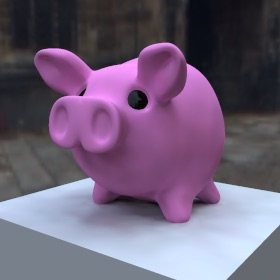
Samples=25 |
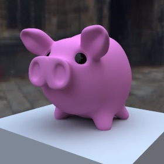
Samples=400 |
- Diffuse bounces: Defines how many indirect diffuse bounces will be considered. More bounces will create more physically correct images but the rendering time will also increase dramatically. There are also more samples necessary if you use higher scattering orders because the noise increases.
This parameter doesn't have any effect if you use ambient occlusion.
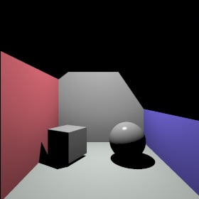
Without radiosity |
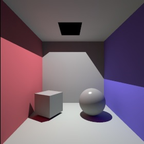
Diffuse bounces=1 |
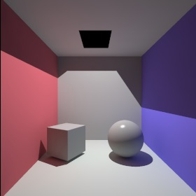
Diffuse bounces=2 |
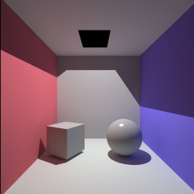
Diffuse bounces=3 |
- Specular bounces: If you set specular bounces to zero only the diffuse lightning components of the surrounding environment will be gathered. That is ok if there are no reflective or transparent objects in the scene. But if you render a scene with some reflecting or transparent objects you lose some serious amount of lightning. To also gather this light increase the specular bounces value. For reflective objects 1 is enough. For transparent objects values >1 might be necessary. But be careful. The specular scatterings have a serious impact on the rendering time.
- Error: Defines how exact the indirect illumination will be interpolated. The lower this number the more exact the final image will become. If you set this number lower than 0.05 the caching algorithm will be disabled, which will cause a dramatic increase in rendering time. It is therefore not recommended to set this value lower than 0.05. There are only some exceptions where disabling the cache is really desired.
- Rmin: The minimum distance between caching samples.
- Rmax: The maximum distance between caching samples.
- Detail detection: Improves the distribution of the irradiance cache samples. Results in more evenly spaced IC samples.
CausticsCaustics are these nice light patterns you can see when the light shines through a glass of wine or through a lens. Caustics can be also seen when light is reflected at some reflective metal or plastic object.
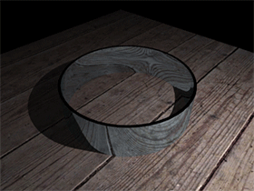
Caustic samples=50 |
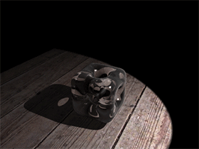
Caustic samples=400 |
The caustics work closely together with the "caustic photons" property of Light object. In the light object you can specify how many photons your light source emits. The photons are traced through the scene and are stored at the surfaces which they hit. The collections of all the photons in the scene are called the photon map.
After the photon tracing path the renderer collects the photons in the nearby area of any pixel and calculates the light intensity at that point.
To render caustics it is important that as many photons as possible hit the reflective or transparent surfaces and get collected in the photon map. If to less photons hit these material you will get quite ugly caustics as you can see on the first image below. Increasing the number of shot photons will cure that problem.
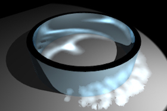
Spot light which traced 5000 photons |
spot light which traced 200.000 photons |
- Use spot lights when possible since point lights for example shot their photons in all directions. With the spot light you can focus the photons in a direction which is of importance.
- The light source offers a property called "pure photon light". Use this property to create some fake light sources which don't create direct lightning but only shot photons into the photon map.
Properties
- Strength: The intensity of the caustics.
- Samples: The max. number of photons which will be used to estimate the intensity of caustic. The higher the value for samples is the higher the quality of the caustics. A to low number of samples cause quite irregular caustics.
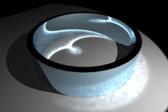
Samples=50 |
Samples=400 |
- Blur: Defines the indirectly radius in screen space in which photons will be collected to estimate the intensity of the caustic. The higher that value the smoother the caustics.
Samples=400
blur=20 |
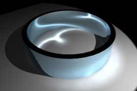
Samples=400
blur=30 |
Depth of FieldIn real life your eyes can only focus on one object. Object which are closer or more distant away appear blurred.
The perfectly sharp images of a renderer therefore could appear
unrealistic. But with help of the Depth of Field (DOF) you can
simulate the depth of field effect.
Scene without and with depth of field effect.
Properties
- Depth of field: Turns depth of filed effect On/Off.
- Camera samples: Determines the quality of the DOF effect. The more samples the less noise.
G-BufferThe G-Buffer records extended image attributes like HDR colors,
the pixels depth or object IDs to an internal EXR file (see also OpenEXR). This additional image information is very helpfull if you want
to apply postprocessing effects like a Z-Buffer depth of field or if you want to composite the renderer image into
some real world footage. If the image was rendered with the G-Buffer turned ON the render manager will allow you to save EXR files.
Properties
- Save G-Buffer: Turns the G-Buffer On/Off
- Color depth: Determines if the colors are recorded with 16Bit (Half Float) or 32Bit (Float) per component.
- Z-Buffer: Records the objects depth value to the G-Buffer.
- Layer ID: Records the objects Layer-ID to the G-Buffer.
- Object ID: Records the objects Object-ID to the G-Buffer.
- Material ID: Records the objects Material-ID to the G-Buffer.
Other Some additional attributes of the renderer.
Properties
- Max. ray depth: Determines the max. recursion depth of the raytracer.
- Textures: Turn texturs On/Off for the whole scene.
- Reflections: Turn surface reflections On/Off for the whole scene.
- Transparency: Turn surface refractions On/Off for the whole scene.
- Shadows: Turn shadows On/Off for all light sources.
- Clamp color: Clamp the final image color into the [0,1] range.
|